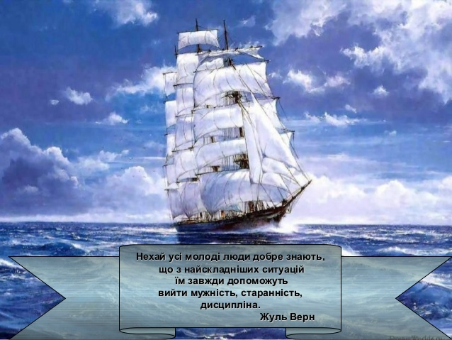
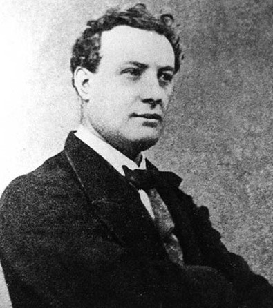
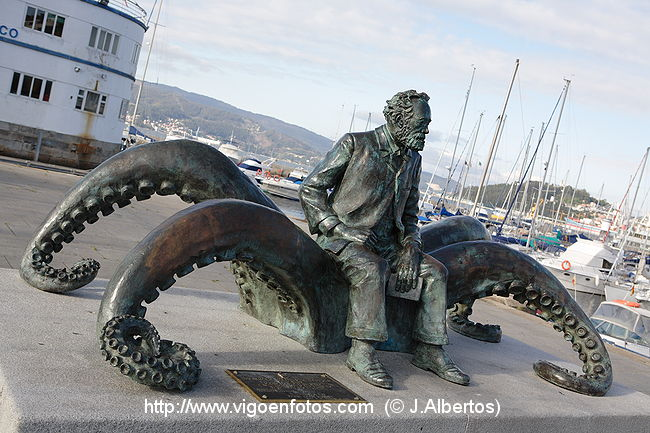

Біографія

Жуль Габрієль Верн народився 8 лютого 1828 року в портовому місті Нанті. Батько його був адвокатом і хотів для сина такої самої кар'єри. Але вразливий і допитливий хлопець мріяв про інше - про далекі мандри. Його вабило море. Коли йому минуло дванадцять років, він, одягшись юнгою, пробрався на шхуну «Коралі», що мала відпливати до Індії. Подумки хлопець уже прощався з Францією. Попереду - неосяжні простори Атлантики, невідомі острови, Тихий та Індійський океани і нарешті - країна казок, таємнича Індія... Проте цій мрії не судилося збутись. На шхуні з'явився батько й забрав невдаху-мандрівника додому.
Закінчивши Нантський ліцей, Жуль Верн 1848 року приїхав у Париж. До Нанта він уже не повернувся. Якийсь час працював адвокатом, був драматичним актором, маклером на біржі. Юнак наполегливо вивчав різні науки: фізику, хімію, біологію, географію, астрономію, баллістику, етнографію, лінгвістику тощо. Відомості з усіх цих галузей Жуль Верн заносив до спеціального каталога, який поповнював протягом усього життя. Каталог містить понад двадцять тисяч зошитів.
Юність Жюля Верна минала в 40-ві роки XIX сторіччя. Це був буремний час для багатьох країн Європи - час буржуазних і буржуазно-демократичних революцій. Вибухнула революція і у Франції. її метою була ліквідація фінансової диктатури аристократії. На руїнах Липневої монархії було проголошено Другу республіку. Буржуазія, скориставшися з перемоги народу, зробила спробу відібрати в трудящих завойовані ними права. Паризькі робітники підняли повстання, але урядові війська потопили його в морі крові. Луї Наполеон, душитель республіки, в грудні 1851 року назвав себе «імператором французів Наполеоном III».
Молодий Жуль Берн вважав себе переконаним республіканцем. Прочитавши твори соціалістів-утопістів - Сен-Сімона, Фур'є, Кабе, - він мріяв про державу, засновану на принципах свободи, рівності та братерства, що їх висунули і обстоювали французькі революціонери кінця XVIII сторіччя. Згодом у романі «Матіас Шандор» (1885) письменник створив патріотичний образ учасника революційних подій 1848 року.
Жуль Верн почав писати в 50-ті рр. XIX сторіччя. Але перші його твори - вірші, оповідання, водевілі, лібретто комічних опер - успіху майже не мали. Справжнє своє покликання він знайшов пізніше, коли в 1863 році написав роман «П'ять тижнів на повітряній кулі». Цей роман надрукував відомий на той час видавець П'єр-Жуль Етцель. Він повірив у талант Жюля Верна і відтоді почав публікувати всі його твори. Деякі з них виходили друком у «Журналі виховання та розваг» - місячнику для юнацтва, що його видавав Етцель.
Твором «П'ять тижнів на повітряній кулі» Жуль Верн поклав початок величезній серії науково-фантастичних і пригодницьких романів «Незвичайні подорожі» (всього 63 книги). Він уклав з Етцелем угоду, за якою мав писати щороку по два романи. В останні роки життя письменник писав, так би мовити, «наперед». Нові книги Жюля Верна видавалися й після його смерті («Незвичайні пригоди експедиції Барсака», 1910, та інші).
Починається тріумфальний шлях Жюля Верна - романіста. Один за одним виходять твори «Подорож до центру Землі» (1864), «Подорож з Землі на Місяць» (1865), «Подорож каштана Гаттераса» (1866), «Діти капітана Гранта» (1868), «Робур-завойовник» (1868), «Навколо Місяця» (1870), «Двадцять тисяч льє під водою» (1870).
Коли почалася франко-прусська війна (1870 р.), Жуль Верн, охоплений патріотичними почуттями, віддав свою яхту «Сен-Мішель» у розпорядження воєнних властей і вступив у загін берегової оборони.
В дні Паризької комуни Жуль Верн був свідком героїчної боротьби французького пролетаріату та кривавої розправи над учасниками Комуни. Він побачив гігантську силу, що таїлася в народі.
Жуль Верн не розумів і не поділяв інтересів захисників Комуни, але був далекий і від того, щоб співчувати її ворогам. В його творах наступних років («Навколо світу за вісімдесят днів», 1872; «Таємничий острів», 1875; «Гентор Сервадак», 1877; «Чорна Індія», 1877; «П'ятнадцятирічний каштан», 1878; «П'ятсот мільйонів бегуми», 1879; «Жангада», 1881; «Впертий Керабан», 1883; «Школа Робінзонів», 1883; «Архіпелаг у вогні», 1884; «Матіас Шандор», 1885; «Догори дном», 1889; «Замок у Карпатах», [6] 1892; «Плавучий острів», 1895, та інших) часто трапляються натяки на злободенні політичні та суспільні події того часу.
1872 року Жуль Верн назавжди виїхав з Парижа. Він оселився в тихому провінційному місті Ам'єні. Письменник продовжував літературну діяльність, пильно стежив за всіма подіями політичного, культурного й наукового життя країни.
На яхті «Сен-Мішель» Жуль Верн об'їхав узбережжя Франції, Іспанії, побував у Середземному й Північному морях, відвідав Шотландію.
На схилі віку Жуль Верн почав утрачати зір, але працювати не кидав. Він писав за допомогою спеціального пристрою. «Я не можу не працювати. Праця - це моя життєва функція. Коли я не працюю, я не відчуваю в собі життя»,- казав він.
Крім романів, Жуль Верн написав десять наукових досліджень з географії; найзначніше з них - тритомна «Історія великих подорожей».
Творча спадщина письменника величезна. Його книги складають бібліотеку приблизно в 115 великих томів.
Помер Жуль Верн 24 березня 1905 року.
Пам’ятник Жулю Верну в м. Віго (Іспанія)